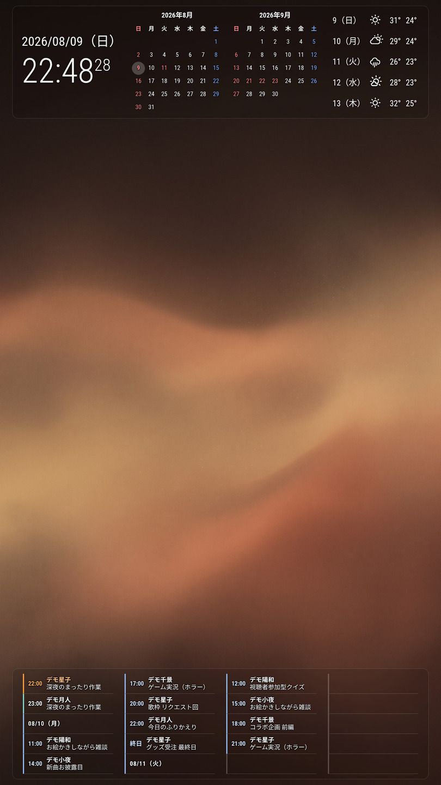

自宅で稼働中 / オープンソース
yp-signage
使っていないノートPCと縦置きモニターを時計、カレンダー、天気、写真、推しの配信予定が確認できるスマートサイネージにしました。
作業中にふと目を向けるだけで必要な情報が分かり、確認のたびにアプリや物理的なカレンダー・時計を見ずに済むようになりました。
- 種類
- スマートサイネージ
- 表示環境
- Ubuntu 26.04 / 1080×1920
- 公開状況
- MITライセンスで公開中
- 技術
- MagicMirror² / JavaScript / Node.js / OpenWeatherMap / systemd / rsync

画面

iCalで購読した配信予定を画面下部に表示します。
できること
- 時計と日付
離れた場所からでも読める大きさで現在時刻を表示します。
- 月カレンダー
先の予定を立てやすいよう当月と翌月の日付を表示。
日本の祝日と振替休日も表示します。
- 5日間の天気
天気と最高・最低気温を日ごとに表示し、外出の判断材料にします。
- 写真スライド
指定したフォルダーを読み取り、背景画像を自動で切り替えます。
- 推しの配信予定
iCalで購読した配信予定のうちこれから始まるものと、同じ時間帯にすでに始まったものを画面下部に表示します。
配信開始時刻になるとその時間開始予定のイベントが点滅します。
- 推しスケと連携
配信スケジュール画像を推しスケが解析し、iCal形式で配信します。
一度購読を設定すれば、推しスケ側で更新した予定がyp-signageまで届きます。